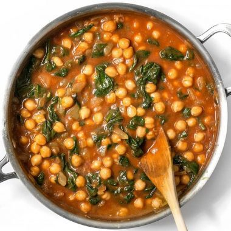

CURRIED CHICKPEAS WITH SPINACH

WHAT YOULL NEED
- 2 Tbsp olive oil ($0.26)
- 1 yellow onion ($0.47)
- 2 cloves garlic ($0.16)
- 1 inch fresh ginger ($0.16)
- 1 1/2 Tbsp curry powder ($0.45)
- 8 oz. spinach (fresh or frozen) ($1.49)
- 2 15oz. cans chickpeas ($1.10)
TOTAL COST = $4.68 FOR 4 SERVINGS
HOW TO MAKE IT
- dice onion, mice garlic, grate ginger. sauté with olive oil on medium heat until onions are soft.
- add curry powder and sauté for another minute. add 1/4 cup of water with spinach. sauté until spinach looks limp.
- rinse chickpeas. add to skillet with tomato sauce. stir and cook for another 5 mins.
- serve over rice or with bread.
MACROS FOR YOU GYM RATS
Serving: 1 Cup ・ Calories: 439.03 cal ・ Carbs: 62.03 g ・ Protein: 21.3 g ・ Fat: 14.8 g
BACK